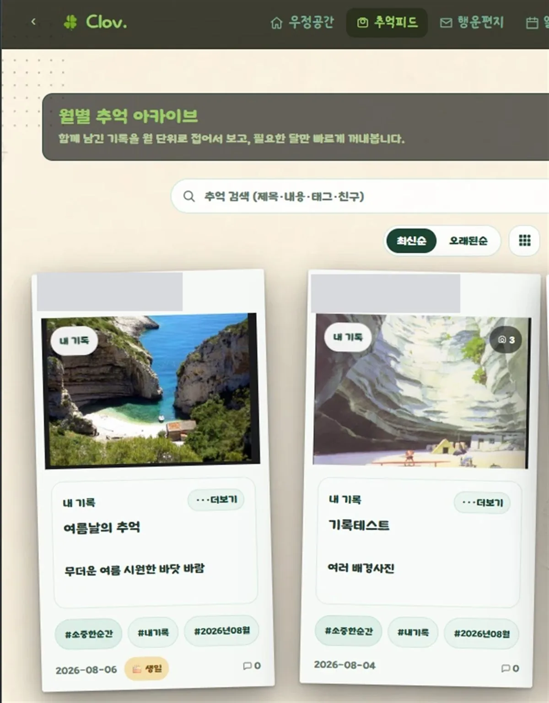
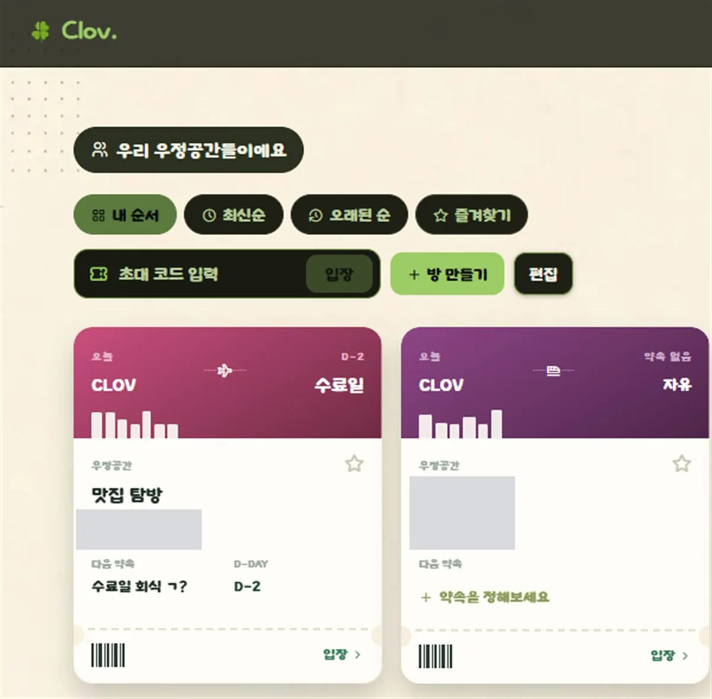
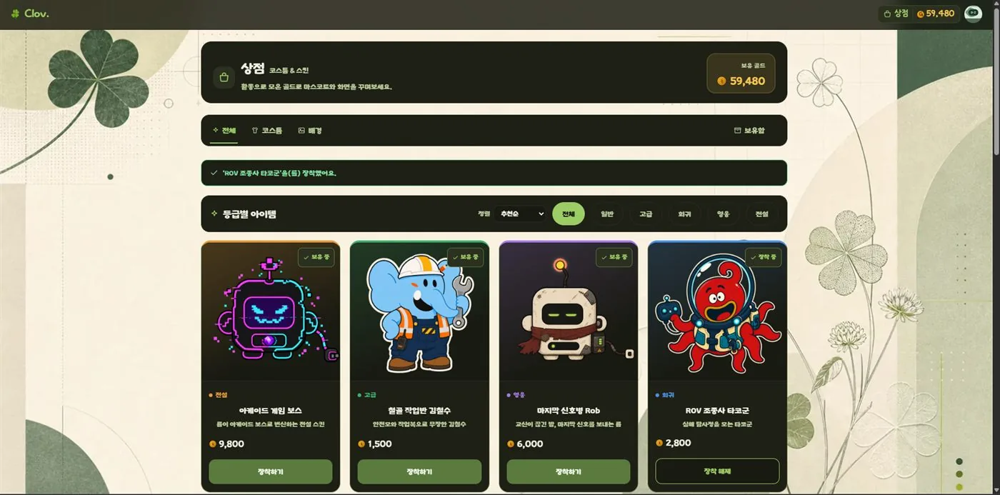

2024년 12월 5일, AWS에서 134,772원이 결제됐습니다. 한 달 뒤에도 94,138원이 빠져나가 모두 23만 원에 가까운 돈이었습니다. 대학 팀 프로젝트에서 백엔드와 인프라를 맡았지만 당시 실력으로는 화면과 서버를 끝내 연결하지 못했습니다. 프로젝트가 끝난 뒤에도 시드니 리전의 로드밸런서와 서버, 디스크, 공인 IP가 남아 있었습니다. 당황했지만 청구 내역부터 읽고 남은 자원을 찾아 삭제했습니다. AWS 고객지원이 요청한 월별 내역과 원인, 재발 방지 대책은 GPT에게 물어 가며 직접 정리해 제출했습니다. 문제를 지우는 데서 끝내지 않고 같은 비용이 다시 생기지 않도록 확인할 항목도 함께 적었습니다. 이때 코드를 만드는 것과 서비스를 닫을 때 남은 자원까지 책임지는 일이 다르다는 것을 처음 배웠습니다. 환불 결과는 확인되지 않았기 때문에 결과를 보태지 않습니다.
↔ 숫자 · 「제출한 과제 / 현재 제출 대상 과제」
02
다시 일어난 날드러난 능력 · 대인관계력
첫 모임에 두 명만 나온 팀을 이슈와 리뷰로 묶어 서비스를 끝까지 연결했습니다.
2026년 6월 26일, 네 명이 함께 쓸 CLOV 저장소를 만들었습니다. 저는 팀장 겸 풀스택 개발자였습니다. 첫 모임에는 저와 팀원 한 명만 나왔고, 저를 뺀 세 사람은 모두 비전공자이며 팀 프로젝트도 처음이었습니다. 설명보다 먼저 기능과 화면을 볼 수 있는 프로토타입을 만들었습니다. 팀원마다 사용하는 AI 도구가 달라 코드가 자주 부딪히자 작업 전에 이슈를 열고, 머지 전에 코드와 실행 결과를 확인한 뒤 수정 이유를 리뷰로 남기는 흐름을 만들었습니다. 말로 한 설명이 적용되지 않을 때는 기초 개념과 서비스 전체 구조를 Markdown 문서로 남기고 다음 이슈에서 같은 기준을 다시 적용했습니다. 처음에는 모든 머지를 직접 보느라 병목이 생겼지만, 반복한 문서와 리뷰 뒤에는 팀원이 각자 작업과 서비스 방향을 파악하면서 문제가 줄었습니다. 8월 4일까지 이슈 152개와 PR 266개가 쌓였고, 제가 리뷰한 PR은 72개였습니다. Ubuntu, Nginx, Docker, HTTPS를 직접 구성해 대학 때 끝내지 못했던 서버 연결도 실제 주소에서 마쳤습니다.
03
더 나아진 지금드러난 능력 · 자기동기력
익숙한 개발을 벗어나 네트워크와 보안 과정에서 다시 초보자로 시작했습니다.
2026년 8월 11일, SKT ALEPH 네트워크 보안 과정에서 다시 초보자가 되었습니다. VLAN, 라우팅, ACL과 pfSense는 모두 처음이었습니다. VMware와 pfSense 실습에서 연결이 끊길 때마다 ping, 로그, IP 대역과 설정값 순으로 확인하며 원인을 좁혔습니다. CLOV 배포에서는 모르는 채 넘겼던 네트워크 흐름을 이번에는 결과만 맞추지 않고 확인 순서까지 기록했습니다. 8월 31일에는 새로 만난 팀원들에게 먼저 말을 걸었고, 9월 4일에는 수업을 따라가기 힘들어하던 옆 팀원을 도왔습니다. 9월 13일에는 침입 탐지 모델이 처음 보는 공격에서도 성능을 유지하는지 CICIDS2017 2,830,743건으로 검증한 논문을 제출했습니다. 익숙한 개발 밖으로 나온 선택을 출석과 리추얼, 재현 가능한 연구 결과로 이어 가고 있습니다.
↔ 숫자 · 「아침 리추얼 작성 수업일 / 확정 수업일」
팀이 안심하고 다음 작업을 이어갈 수 있는 기준을 만드는 개발자가 되겠습니다.
숫자
회복탄력성과 과제지속력을 13주 과정 기록의 숫자로 보여 줍니다. 값마다 근거 능력과 출처, 기준일을 표시했습니다.
0127 / 27일출석일 / 확정 수업일지각 0 · 결석 0근거 · 과제지속력 출처 · 내 출석 기록 기준 · 2026-09-17 분모 · 2026-08-11부터 2026-09-17까지 확정된 수업일0227 / 27일아침 리추얼 작성 수업일 / 확정 수업일근거 · 회복탄력성 출처 · 내 리추얼 기록 기준 · 2026-09-17 분모 · 2026-08-11부터 2026-09-17까지 확정된 수업일↔ 이야기 · 「더 나아진 지금」0311 / 11개제출한 과제 / 현재 제출 대상 과제공개 검증 가능 9개 · 비공개 저장소 2개근거 · 과제지속력 출처 · 내 제출 현황 · GitHub 저장소 기준 · 2026-09-20 분모 · T01부터 T11까지. 진행 중인 T12와 대기 중인 T13은 제외↔ 이야기 · 「고난」
대표작
01LIVE
CASE 01 · 팀 프로젝트 · 풀스택 · 2026.06 - 2026.08
CLOV — 함께 만드는 우정 기록 서비스
4인 팀의 팀장 겸 풀스택 개발자로 이슈와 코드 리뷰 흐름을 만들고, React와 Spring Boot 서비스를 Docker·Nginx·HTTPS 환경에 배포했습니다.
무작위 분할에서 나온 높은 탐지 점수가 실제로 처음 보는 공격에도 유지되는지 확인할 필요가 있었습니다.
02 / DECISION
판단
무작위 분할과 날짜 기반 미관측 공격 분할을 따로 설계하고, 세 모델의 성능과 SHAP 설명 안정성을 같은 조건에서 비교했습니다.
03 / BUILD
구현
CICIDS2017 2,830,743건을 감사한 뒤 Python·scikit-learn·XGBoost·SHAP으로 실험과 재현 자료를 구성했습니다.
04 / VERIFY
검증
XGBoost Macro F1이 0.9979에서 0.3871로 낮아지는 격차를 확인하고 결과와 재현 자료를 논문으로 제출했습니다.
03LIVE
CASE 03 · 5번 과제 · 프론트엔드 · AI 인계 · 2026.08 - 2026.09
ALTER / EGO — 대화 없이 넘긴 AI 인계
3번 과제로 만든 카드 스튜디오에 원본과 완성 카드를 겹쳐 보는 비교 슬라이더를 더하면서, 앞선 AI의 대화를 넘기지 않고 인계 문서만으로 다음 AI가 이어받게 한 실험입니다. 고정 검사 10개를 모두 통과하고 단위 85개와 Chromium E2E 38개로 전체를 다시 검증했습니다.
AI를 바꿀 때마다 사람이 같은 맥락을 다시 설명해야 했고, 대화를 넘기지 않고도 다음 AI가 같은 프로젝트를 안전하게 이어갈 수 있는지는 확인된 적이 없었습니다.
02 / DECISION
판단
누가 더 빠른지 겨루는 대신 기능 범위와 고정 검사 10개를 먼저 정하고, 대화를 넘기지 않은 채 코드·검사·인계 문서만으로 다음 AI가 이어받는지 확인하기로 했습니다.
03 / BUILD
구현
인계 문서에 목표·현재 상태·실행 명령·통과한 검사·남은 문제·다음 행동·주의 사항 7개 항목을 담아 앞선 AI를 계획한 지점에서 멈추고, 다음 AI가 첫 대화 없이 남은 검사와 전체 회귀 검사를 맡게 했습니다. 비교 상태는 미리보기 안에만 두어 내려받는 PNG와 템플릿, 되돌리기 이력에는 섞이지 않게 했습니다.
04 / VERIFY
검증
고정 검사 10개를 모두 통과하고 단위 테스트 85개와 Chromium E2E 38개를 유지했으며, 사람이 코드를 다시 고치거나 같은 내용을 재설명한 일은 없었습니다.
04NEXT
CASE 04 · 13번 과제 · 앱 · 예정 · 2026.11.12 이전
13번 과제 앱이 들어갈 자리
13번 과제에서 만들 앱이 들어갈 대표작 자리입니다. 과정이 끝나는 2026년 11월 12일 전에 완성해 공개 링크와 검증 결과를 채웁니다.
경력과 과제
과제마다 능력과 상황, 행동, 결과를 같은 순서로 적었습니다.
01
2026.06 - 2026.08대인관계력
CLOV 팀 프로젝트
팀장 · 풀스택 개발자 · 4인 팀
일정 계획

추억 피드

우정공간

상점
상황
비전공자 세 명이 포함된 팀의 첫 모임에 두 명만 참석했고, 서로 다른 AI 도구에서 만든 코드가 자주 충돌했습니다.
행동
기능을 볼 수 있는 프로토타입을 먼저 만들고 이슈 작성, 실행 확인, 코드 리뷰 뒤 머지하는 흐름을 운영했습니다.
결과
2026년 8월 4일까지 이슈 152개와 PR 266개를 기록했고, 직접 리뷰한 PR 72개를 포함해 서비스를 HTTPS 환경에 배포했습니다.
AI를 바꿀 때마다 사람이 같은 맥락을 다시 설명해야 했고, 대화를 넘기지 않고도 다음 AI가 같은 프로젝트를 안전하게 이어갈 수 있는지는 확인된 적이 없었습니다.
행동
실행하지 않은 검사는 통과로 적지 않는다는 기준을 먼저 세우고, 앞선 AI가 검사 1~3까지만 구현한 뒤 계획대로 멈추게 했습니다. 다음 AI는 인계 문서만 읽고 검사 4~10과 전체 회귀 검사를 마쳤습니다. 다음 AI가 금지 규칙보다 앞선 AI의 작업 기록을 먼저 읽은 절차 위반은 통과 결과로 덮지 않고 작업 기록과 공개 화면에 그대로 남겼습니다.
결과
고정 검사 10개를 모두 통과하고 단위 테스트 85개와 Chromium E2E 38개를 유지했으며, 사람이 코드를 다시 고치거나 같은 내용을 재설명한 일은 없었습니다.
수업에서 받은 게시판에 등급별 접근 제어를 넣고, 과잉권한을 자동으로 회수하는 수업 코드를 옮겨 붙여야 했습니다. 자동 회수가 잘못 돌면 관리자까지 강등해 아무도 회원을 관리할 수 없게 될 수 있었습니다.
행동
회수 봇은 출력만 확인, Graylog 신고만, 실제 강등의 3단계로 나눠 옵션을 줄 때만 권한을 빼앗게 했고, 증적 캡처와 경보 전송기가 API 키와 Webhook 주소를 화면과 오류 메시지에 남기지 않게 했습니다. SYN Flood 실습에서는 경보가 도착한 것만 보지 않고 실행 기록과 대조해, 공격이 허용으로 표시되고 실제 출발지와 개수가 빠지던 문제를 고쳤습니다.
결과
자동 테스트 45개를 통과했고, Kali에서 보낸 2초 SYN Flood 35,033개가 출발지·개수와 함께 Graylog, n8n, 메신저 3종, 게시판 기록까지 이어지는 것을 확인했습니다.